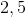
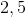
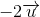
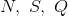

Operații cu vectori
Adunarea vectorilor
Pentru a aduna doi vectori, mai întâi alegem câte un reprezentant al lor; atunci, practic, ne rezumăm la adunarea vectorilor legați.
În cadrul acestei secțiuni vom trata următoarele două cazuri: adunarea vectorilor coliniari și adunarea vectorilor necoliniari (oarecare).
Adunarea vectorilor coliniari
Dacă vectori sunt coliniari atunci ei au aceeași direcție.
În primul rând să luăm vectorii  , respectiv
, respectiv  , ca având același sens.
, ca având același sens.
Atunci vectorul sumă va avea aceeași direcție și același sens cu vectorii și , iar modulul sau lungimea lui va fi suma modulelor celorlalți doi:
.

Acum să luăm vectorii și , ca având sensuri opuse.
În acest caz, vectorul sumă va avea aceeași direcție cu cei doi vectori și sensul celui cu modulul mai mare, iar lungimea lui va fi egală cu diferența molulelor celor doi vectori.

Cum putem vedea și în imaginea de mai sus, vectorul (cel verde) are o lungime de  cm, iar vectorul (cel roșu) are o lungime de  cm; atunci, conform celor spuse, direcția vectorului sumă va coincide cu cea a vectorului , deoarece el este mai lung, iar lungimea vectorului sumă va fi difereța lungimilor celor doi vectori, adică cm.
cm, iar vectorul (cel roșu) are o lungime de  cm; atunci, conform celor spuse, direcția vectorului sumă va coincide cu cea a vectorului , deoarece el este mai lung, iar lungimea vectorului sumă va fi difereța lungimilor celor doi vectori, adică cm.
Adunarea vectorilor necoliniari (oarecare)
Adunare a doi sau mai mulți vectori se face după anumite reguli, astfel că avem trei cazuri:
- Adunarea a doi vectori după regula triunghiului.
- Adunarea a doi vectori după regula paralelogramului.
- Adunarea mai multor vectori după regula patrulaterului.
Vom lua pe rând aceste cazuri și le vom discuta.
Adunarea a doi vectori după regula triunghiului
Avem următoarea figură:
.jpg)
În acest caz avem de adunat doi vectori consecutivi, adică vârful primului vector coincide cu originea celui de-al doilea vector.
Cum observăm și în figura de mai sus, suma vectorilor și  (vârful primului coincide cu originea celui de-al doilea în punctul
(vârful primului coincide cu originea celui de-al doilea în punctul  ) este vectorul sumă, care este vectorul , vector care are originea primului vector și vârful celui de-al doilea vector.
) este vectorul sumă, care este vectorul , vector care are originea primului vector și vârful celui de-al doilea vector.
Adunarea a doi vectori după regula paralelogramului
Avem, în figura de mai jos, reprezentat un paralelogram.
.jpg)
În cazul de față avem doi vectori a căror origine coincide.
Dorim să adunăm vectorii  și .
și .
Observăm că ei au aceeași origine și anume în punctul  .
.
Atunci, vectorul sumă va fi vectorul  , acesta reprezentând diagonala paralelogramului , în care vectorii care trebuie adunați, , respectiv , reprezintă două laturi consecutive.
, acesta reprezentând diagonala paralelogramului , în care vectorii care trebuie adunați, , respectiv , reprezintă două laturi consecutive.
Observație:
Vectorul sumă va avea aceeași origine cu vectorii pe care îi avem de adunat.
Adunarea mai multor vectori după regula patrulaterului
Această regulă este o extindere a regulii triunghiului, cu menționarea faptului că avem mai mulți vectori consecutivi, adică vectori în care vârful unuia coincide cu originea celuilalt.
Atunci va trebui să închidem poligonul care este compus din vectorii respectivi, iar vectorul sumă va avea originea primului vector și vârful ultimului vector.
.jpg)
Cum vedem și imaginea de mai sus, adunăm vectorii , , , și .
Atunci, vectorul sumă, notat cu roșu, este vectorul .
Așadar, avem că:
.
Proprietăți ale operației de adunare a vectorilor
Adunarea vectorilor are mai multe proprietăți, așa cum vei putea observa în cele ce urmează.
Propoziția G8: Proprietăți ale adunării vectorilor
Fie vectorii  .
.
Adunarea vectorilor este:
- Asociativă:
.
- Comutativă:
.
- Are ca și element neutru vectorul nul :
.
- Are ca și element simetric (opus) vectorul și astfel, avem relația:
.
Observație:
Vectorul opus are aceeași lungime și aceeași direcție cu vectorului , însă sens contrar.
Observație:
Având definite proprietățile adunării vectorilor, putem defini și diferența a doi vectori.
Definiția G9: Diferența a doi vectori
Fie vectorii și .
Diferența vectorilor și reprezintă suma vectorului , cu opusul vectorului , adică , fiind dată de următoarea relație:
.

În imaginea de mai sus putem observa cum obținem vectorul diferență.
Astfel, fie , respectiv doi vectori care au aceeași origine.
Atunci, vectorul diferență va fi vectorul care are originea în vârful celui de-al doilea vector, iar vârful său coincide cu vârful primului vector.
Aplicație
Pentru a înțelege mai bine cum se adună doi vectori, profesorii noștri de matematică ți-au pregătit următoarea aplicație:
Fie  un paralelogram, iar mijlocul segmentului
un paralelogram, iar mijlocul segmentului ![[AB]](../../media/webbooks/616/4887/images/equations/xjlu2-mo868buspmukpl9w==.gif) .
.
Să se calculeze:
- ;
- ;
- ;
- .
Soluție:
Mai întâi, desenenăm paralelogramul:

- Deoarece vectorii , respectiv au aceeași direcție, precum și același sens, atunci vectorul sumă va fi .
Așadar, avem că:
.
- Observăm că acești vectori au direcții diferite, însă au aceeași origine, așa că vom folosi regula paralelogramului descrisă în pagina anterioară, iar vectorul sumă va fi vectorul .
Astfel, obținem:
 .
.
- Acești doi vectori au aceeași lungime, aceeași direcție, dar sensuri opuse.
În acest caz, vectorul sumă va fi vectorul nul, .
Ne rezultă că:
.
- Observăm că vectorii pe care trebuie să îi adunăm sunt vectori consecutivi, adică originea celui de-al doilea coincide cu vârful primului; astfel putem aplica regula triunghiului și obținem că vectorul sumă este vectorul .
Așadar, am obținut că:
.
Înmulțirea cu scalari a vectorilor
Fie  un număr real și un vector din plan.
un număr real și un vector din plan.
Definiția G10: Înmulțirea cu scalari a vectorilor
Produsul vectorului cu numărul  este un vector, notat
este un vector, notat  , care își schimbă sensul astfel:
, care își schimbă sensul astfel:
.
Așadar, în cazul cel mai simplu, când , produsul este vectorul nul, .
Atunci când este un număr strict pozitiv, vectorul va avea aceeași direcție și același sens cu vectorul , iar dacă când este un număr strict negativ, vectorul va avea aceeași direcție, dar sens contrar față de vectorul .
Lungimea vectorului va fi:
.
Exemplu:
Să considerăm un vector și apoi să construim vectorii și , reprezentați în figura următoare:

Cum se poate observa în imaginea de mai sus, vectorul are aceeași direcție cu vectorul ; de asemenea, are același sens, deoarece numărul cu care am înmulțit vectorul este strict pozitiv, iar lungimea lui este de trei ori mai mare decât lungimea primului vector.
De asemenea, am construit vectorul , care are aceeași direcție cu vectorul , dar are sens contrar vectorului , deoarece numărul cu care am înmulțit vectorul este strict negativ, iar lungimea lui este de două ori mai mare decât lungimea primului vector.
Proprietăți ale înmulțirii unui vector cu un scalar
În cadrul acestei pagini, profesorii de matematică ai echipei Liceunet ți-au pregătit câteva proprietăți ale înmulțirii unui vector cu un scalar.
Fie vectorii , respectiv și scalarii  .
.
Propoziția G11: Proprietăți ale înmulțirii unui vector cu un scalar
Cu ajutorul definirii produsului unui vector cu un scalar putem să deducem ușor următoarele proprietăți:
- , oricare ar fi
 și oricare ar fi vectorii și ;
și oricare ar fi vectorii și ;
(a înmulți un scalar cu o sumă, înseamnă a înmulți acel scalar cu fiecare termen al sumei, apoi adunând rezultatele - distributivitatea înmulțirii față de adunare)
- , oricare ar fi și oricare ar fi vectorul ;
(distributitvitatea înmulțirii față de adunare - fiecare scalar este înmulțit cu vectorul , iar apoi rezultatele se adună)
- , oricare ar fi scalarii și oricare ar fi vectorul ;
(asociativitatea)
- .
(elementul neutru al înmulțirii este vectorul unitate)
Coliniaritatea a doi vectori
Folosind operația de înmulțire cu scalari a vectorilor detaliată în paginile anterioare ale acestui ghid, avem posibilitatea de a discuta despre coliniaritatea a doi vectori.
Definiția G12: Vectori coliniari
Pentru ca doi vectori să fie coliniari, aceștia trebuie să îndeplinească una dintre condițiile următoare:
- O primă condiție de coliniaritate ne spune că: doi vectori , respetiv sunt coliniari, dacă și numai dacă există un număr real nenul , astfel încât să avem îndeplinite una dintre relațiile următoare: sau .
- O altă condiție este: doi vectori și sunt coliniari, dacă și numai dacă există două numere reale nenule , respectiv , astfel încât să avem îndeplinită relația: .
Din aceste două condiții putem să dăm și o condiție de necoliniaritate astfel:
Definiția G13: Vectori necoliniari
Doi vectori , respetiv sunt necoliniari, dacă și numai dacă din relația , ne rezultă că (adică scalari sunt nuli).
- Caracterizarea punctelor coliniare
În continuare vom caracteriza punctele coliniare, folosindu-ne de coliniaritatea vectorilor.
Astfel, fie trei puncte.
Definiția G14: Coliniaritatea punctelor A, B, C
Vom spune că punctele A, B, C sunt coliniare, dacă există un număr real , astfel încât să fie îndeplinită relația:
.
Aplicație
Pentru a vedea cum se caracterizează punctele coliniare în plan, profesorii noștri de matematică ți-au pregătit următorul exercițiu:
Fie un paralelogram.
Punctul  este mijlocul segmenului
este mijlocul segmenului ![[MN]](../../media/webbooks/616/4887/images/equations/nppkc8eyqpylrngemxka7w==.gif) , iar punctul
, iar punctul  este situat pe segmentul , astfel încât .
este situat pe segmentul , astfel încât .
Vom demonstra că punctele  sunt coliniare.
Soluție:
Avem următoarea imagine:

Pentru a demonstra că punctele sunt coliniare, este suficient să demonstrăm că vectorii , respectiv sunt coliniari.
Vom arăta acest lucru cu ajutorul celei de-a doua condiții de coliniaritate prezentate în pagina anterioară ( Definiția G12: ( Vectori coliniari ), 2. ):
.
Cu ajutorul regulii triunghiului, detaliată în secțiunea „Aduanrea vectorilor”, vom exprima vectorii și astfel:
(1)
și
(2)
Vectorii se pot înmulții cu un scalar, așa că vom înmulții prima relație cu  și ne rezultă că:
și ne rezultă că:
(3)
Vectorii se pot aduna, așa că vom aduna cele două relații, relația (3) cu relația (2) și obținem:
Așadar, am obținut că:
,
ceea ce înseamnă că vectorii și sunt coliniari, de unde ne rezultă că punctele sunt coliniare.
Descompunerea unui vector după doi vectori necoliniari și nenului
Pentru a descompune un vector din plan după doi vectori necoliniari  și
și  , determinăm coeficienții , respectiv din suma .
, determinăm coeficienții , respectiv din suma .
Pentru a putea face acest lucru, vom lua un punct  pe dreapta suport a vectorului , și vom construim dreptele cu aceleași direcții ca și vectorii , respectiv , care să treacă prin punctul , la fel ca în figura de mai jos:
pe dreapta suport a vectorului , și vom construim dreptele cu aceleași direcții ca și vectorii , respectiv , care să treacă prin punctul , la fel ca în figura de mai jos:

Vom nota cu , respectiv cu componentele vectorului , după cele două direcții, și astfel, cu ajutorul regulii paralelogramului, putem să rescriem relația astfel:
.
Dar, deoarece vectorul este coliniar cu vectorul și vectorul este coliniar cu vectorul , avem relațiile:
,
respectiv
.
Astfel obținem descompunearea vectorului după doi vectori necoliniari și .
Definiția G15: Expresia analitică a unui vector și coordonatele unui vector
Scrierea sub această formă, , a unui vector se numește expresia analitică a vectorului , iar numerele , respectiv se numesc coordonatele vectorului.
Observație:
Un vector de modul  se numește versor al direcției sale.
se numește versor al direcției sale.
Definiția G16: Vectori egali și vectori coliniari
Fie doi vectori scriși în formă analitică:
,
respectiv
 .
.
Spunem că vectorii
și sunt egali, dacă și . Spunem că vectorii
și sunt coliniari, dacă  .
.
Observație:
Cei doi vectorii se pot aduna astfel:
.